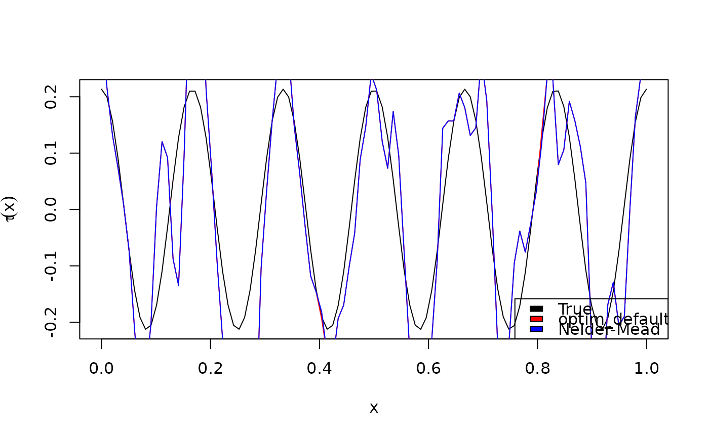

Estimate the bivariate copula dependence parameter eta at multiple covariate values.
CondiCopLocFit(
u1,
u2,
family,
x,
x0,
nx = 100,
degree = 1,
eta,
nu,
kernel = KernEpa,
band,
optim_fun,
cl = NA
)Vector of first uniform response.
Vector of second uniform response.
An integer defining the bivariate copula family to use. See ConvertPar().
Vector of observed covariate values.
Vector of covariate values within range(x) at which to fit the local likelihood. Does not have to be a subset of x.
If x0 is missing, defaults to nx equally spaced values in range(x).
Integer specifying the polynomial order of the local likelihood function. Currently only 0 and 1 are supported.
Optional initial value of the copula dependence parameter (scalar). If missing will be estimated unconditionally by VineCopula::BiCopEst().
Optional initial value of second copula parameter, if it exists. If missing and required, will be estimated unconditionally by VineCopula::BiCopEst(). If provided and required, will not be estimated.
Kernel function to use. Should accept a numeric vector parameter and return a non-negative numeric vector of the same length. See KernFun().
Kernal bandwidth parameter (positive scalar). See KernWeight().
Optional specification of local likelihood optimization algorithm. See Details.
Optional parallel cluster created with parallel::makeCluster(), in which case optimization for each element of x0 will be done in parallel on separate cores. If cl == NA, computations are run serially.
List with the following elements:
xThe vector of covariate values x0 at which the local likelihood is fit.
etaThe vector of estimated dependence parameters of the same length as x0.
nuThe scalar value of the estimated (or provided) second copula parameter.
By default, optimization is performed with the quasi-Newton algorithm provided by stats::nlminb(), which uses gradient information provided by automatic differentiation (AD) as implemented by TMB.
If the default method is to be overridden, optim_fun should be provided as a function taking a single argument corresponding to the output of CondiCopLocFun(), and return a scalar value corresponding to the estimate of eta at a given covariate value in x0. Note that TMB calculates the negative local (log)likelihood, such that the objective function is to be minimized. See Examples.
# simulate data
family <- 5 # Frank copula
n <- 1000
x <- runif(n) # covariate values
eta_fun <- function(x) 2*cos(12*pi*x) # copula dependence parameter
eta_true <- eta_fun(x)
par_true <- BiCopEta2Par(family, eta = eta_true)
udata <- VineCopula::BiCopSim(n, family=family,
par = par_true$par)
# local likelihood estimation
x0 <- seq(min(x), max(x), len = 100)
band <- .02
system.time({
eta_hat <- CondiCopLocFit(u1 = udata[,1], u2 = udata[,2],
family = family, x = x, x0 = x0, band = band)
})
#> user system elapsed
#> 0.191 0.009 0.200
# custom optimization routine using stats::optim (gradient-free)
my_optim <- function(obj) {
opt <- stats::optim(par = obj$par, fn = obj$fn, method = "Nelder-Mead")
return(opt$par[1]) # always return constant term, even if degree > 0
}
system.time({
eta_hat2 <- CondiCopLocFit(u1 = udata[,1], u2 = udata[,2],
family = family, x = x, x0 = x0, band = band,
optim_fun = my_optim)
})
#> user system elapsed
#> 0.360 0.016 0.375
plot(x0, BiCopEta2Tau(family, eta = eta_fun(x0)), type = "l",
xlab = expression(x), ylab = expression(tau(x)))
lines(x0, BiCopEta2Tau(family, eta = eta_hat$eta), col = "red")
lines(x0, BiCopEta2Tau(family, eta = eta_hat2$eta), col = "blue")
legend("bottomright", fill = c("black", "red", "blue"),
legend = c("True", "optim_default", "Nelder-Mead"))
